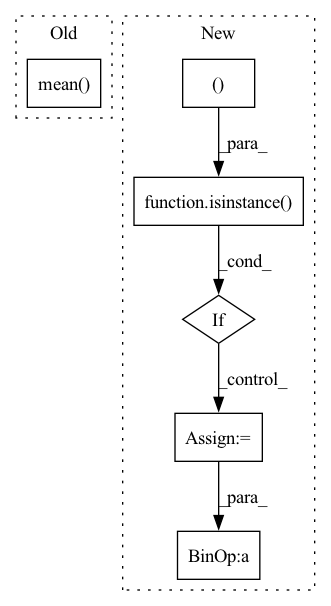

Pattern ID :22483

Before Change
batch_size = int_shape(target_tensor)[0]
if topk == 1:
return equal(input_tensor,target_tensor).mean()
else:
_,pred = input_tensor.topk(topk)
pred = cast(tf.transpose(pred),"float32")
target_tensor= cast(repeat_elements(expand_dims(target_tensor,0),topk,axis=0),"float32")
After Change
input_mask=ones_like(input_tensor,dtype=input_tensor.dtype)
if isinstance(ignore_index, int) and 0 <= ignore_index < num_classes:
input_mask[input_tensor==ignore_index] = 0
elif isinstance(ignore_index, (list, tuple)):
for idx in ignore_index:
if isinstance(idx, int) and 0 <= idx < int_shape(output)[axis]:
input_mask[input_tensor == idx] = 0
batch_size = int_shape(target_tensor)[0]
if topk == 1:
return reduce_sum(cast(tf.equal(input_tensor,target_tensor),output.dtype)*input_mask)/clip(reduce_sum(input_mask),min=1)
else:
_,pred = input_tensor.topk(topk)
pred = cast(tf.transpose(pred),"float32")
In pattern: SUPERPATTERN
Frequency: 3
Non-data size: 6
Instances
Fragment ID: 71035071
Project Name: allanyiin/trident
Commit Name: c626418b50134f22a37436b73a9e5b8b96d80f86
Time: 2021-02-14
Author: allan@asiaminer.com.tw
File Name: trident/optims/tensorflow_metrics.py
M Class Name: AnonimousClass
N Class Name: AnonimousClass
M Method Name: accuracy(6)
N Method Name: accuracy(5)
M Parent Class:
N Parent Class:
M File Name: trident/optims/tensorflow_metrics.py
N File Name: trident/optims/tensorflow_metrics.py
M Start Line: 40
M End Line: 71
N Start Line: 36
N End Line: 81
'>
Before Change
"kernel_map_pred", kernels_pred[0:1, 0, :, :], global_steps
)
summary_writer.add_scalar(
"loss", mx.nd.mean(loss).asscalar(), global_steps
)
summary_writer.add_scalar(
"c_loss", mx.nd.mean(pse_loss.C_loss).asscalar(), global_steps
After Change
):
num_kernels = 3
icdar_loader = ICDAR(root_dir=data_dir, num_kernels=num_kernels - 1)
if not isinstance(ctx, (list, tuple)):
ctx = [ctx]
batch_size = batch_size * len(ctx)
loader = DataLoader(icdar_loader, batch_size=batch_size, shuffle=True)
net = PSENet(num_kernels=num_kernels, ctx=ctx, pretrained=True)
// initial params
'>
Fragment ID: 71035088
Project Name: breezedeus/cnstd
Commit Name: d056c26a3b50e7ea9b9ccd14a9041f88012463e4
Time: 2020-05-16
Author: breezedeus@163.com
File Name: train.py
M Class Name: AnonimousClass
N Class Name: AnonimousClass
M Method Name: train(10)
N Method Name: train(10)
M Parent Class:
N Parent Class:
M File Name: train.py
N File Name: train.py
M Start Line: 57
M End Line: 114
N Start Line: 29
N End Line: 124
'>
Before Change
batch_size = target_tensor.size(0)
if topk==1:
return input_tensor.eq(target_tensor).float().mean()
else:
_, pred = input_tensor.topk(topk)
pred = pred.t()
correct = pred.eq(target_tensor.reshape((1, -1)).expand_as(pred))
After Change
input_mask=ones_like(input_tensor)
if isinstance(ignore_index, int) and 0 <= ignore_index < num_classes:
input_mask[input_tensor==ignore_index] = 0
elif isinstance(ignore_index, (list, tuple)):
for idx in ignore_index:
if isinstance(idx, int) and 0 <= idx < int_shape(output)[axis]:
input_mask[input_tensor == idx] = 0
batch_size = target_tensor.size(0)
if topk==1:
return input_tensor.eq(target_tensor).float()*input_mask.sum()/(target_tensor*input_mask).float().sum()
else:
_, pred = input_tensor.topk(topk)
pred = pred.t()
'>
Fragment ID: 71035094
Project Name: allanyiin/trident
Commit Name: b3fa29c7fa2f3aa1ffdcb6381cebeede394c0e7b
Time: 2021-02-14
Author: allan@asiaminer.com.tw
File Name: trident/optims/pytorch_metrics.py
M Class Name: AnonimousClass
N Class Name: AnonimousClass
M Method Name: accuracy(6)
N Method Name: accuracy(5)
M Parent Class:
N Parent Class:
M File Name: trident/optims/pytorch_metrics.py
N File Name: trident/optims/pytorch_metrics.py
M Start Line: 73
M End Line: 73
N Start Line: 39
N End Line: 83